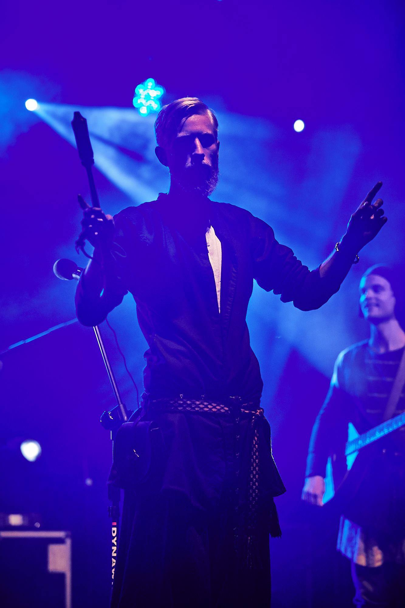
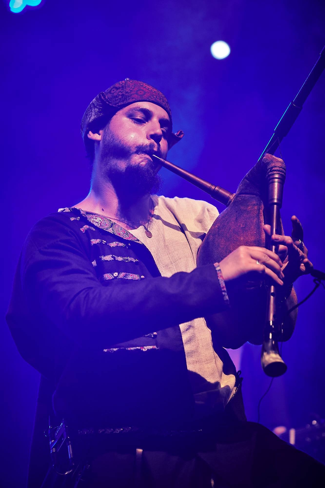
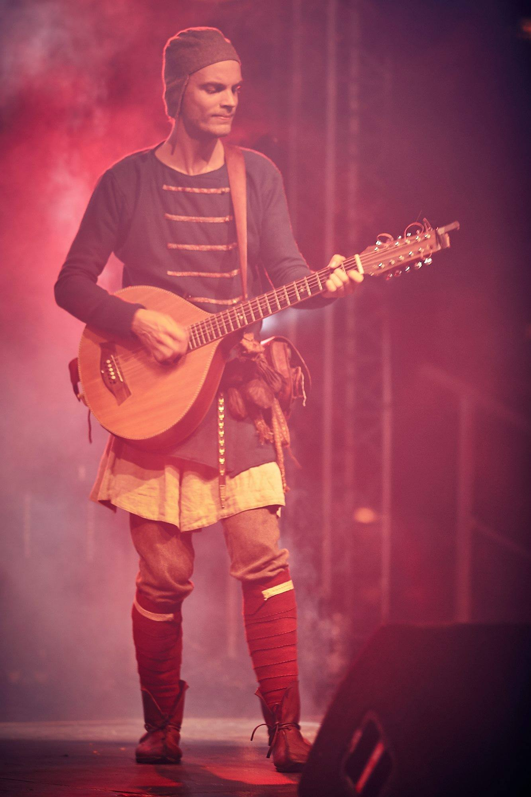
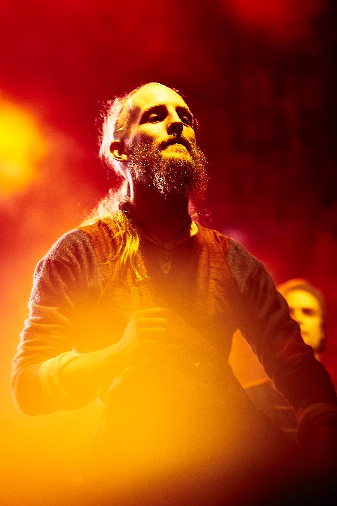

Band Members
Hannes
With an arsenal of various percussion and the Davul, he is the drum machine of Kalabalik. With a background in classic percussion, Hannes also plays keyed percussion, such as the Santur and hammered Dulcimer.

Erik
Plays the capped shawm, keyed fiddles and other various string instruments.

Otto
With many bagpipes and flutes at his disposal, everything from forest wind to ear piercing loudness is at control. Also have a lot of interest in the Vendel period.

Oskar
In conjunction with Hannes, Oskar perfects the musical fundament of Kalabalik, with both accompaniment and melody playing on plucked strings, such as the guitar-cittern.

Ingemar
Glues the band together acousticly with his hurdy gurdy playing. Probably a world champion of some sort when it comes to tuning hurdy gurdies.

Instruments
Shawm, Schalmei and Rauschpfeifes
In great company of Otto with his bagpipes is the capped shawm played by Erik. The shawms are loosely considered to be the ancestors of the modern oboe family instruments, with their double reeds and conical bores. With traditions many hundreds of years old, the shawm has been and is seen around the world in many different shapes and sizes, as the loud Zurna, the Bombarde most prominent in the Région Bretagne (Brittany) of France and Scottland, and the German schalmei. Erik plays a diatonic capped shawm built by Klaus Stecker from Germany.
Bagpipes
Think of the shawm, but stick it in a bag acting as an extended lung. And while you're at it, add some drones as well. There exist many different variants of bagpipes, different in size and shape, and with many different sets of drone and melody pipes. There are the most well known Scottish great highland bagpipes, the many different Gaitas from and around Spain and Portugal, the Bulgarian Kaba Gaida, further on to the many French shapes and sizes of Bechonets and Binious, all the way up to Sweden where we have our own sad and mellow-sounding companion in the Swedish bagpipes. Most often in our live performances you will hear Otto play, among many, a loud German Warpipe or a German Shepherds pipe custom built by Thorsten Stoye, closer related to the french bechonet than the Scottish Highland Pipes. Erik sometimes also play a Jens Günzel German Warpipe, while Ingemar preffer his Swedish bagpipes when lower volumes are preferred. Kalabalik has many bagpipes, but as someone famous once said: "you can never have to many bagpipes".
Hurdy Gurdy
In short, the hurdy gurdy can be described as the string version of the bagpipes. The instrument most often has drone strings, and at least one (but often more) melody strings, which are put into motion by turning the wheel using the crank. Many hurdy gurdies also carry the special drone string and bridges, which will make a distinct buzzing sound when the speed of the wheel is increased, allowing rhythmic patterns to be played at the same time as the melody. In some sense, the hurdy gurdy is a one man band, having both bass drones, melody and a drummer, which might be one of the many reasons for its succsess on the medieval dance floors around the world.
Following the theme of there being many different variants of the instruments already mentioned previously, the hurdy gurdy is no different. We have French hurdy gurdies recognizable for their lute shaped bodies and large wheels, the large German hurdy gurdies whith their flat backs, and the English ones being a mix of the qualities from the French and the German ones. Here in Sweden we have our own now somewhat famous Groddalira, which in many ways draw more resemblance to the Hungarian hurdy gurdy with the smaller wheel and flat shaped body. Ingemar plays two distinctly different hurdy gurdies, one being his Phoenix Alea, built by Alexandra Betz in Germany, which has large flexibility regarding different tunings and playability, and the other one being his Blekingelira built by Leif Eriksson, which is to be considered sounding more mean and haunting compared to the Phoenix.
Plucked Strings
The guitarr-like instruments primarily used by Oskar is the cittern, which specifically is constructed much like many, many related plucked instruments in the family containing everything from mandolins, guitars, mandolas, bouzoukis. It has the punch of a regular steel string guitar but with the tonality of the look-alikes such as the bouzouki, thanks to the body shape.
Also used are the other various plucked string instruments, some of them already mentioned above. We use different sizes of bouzoukis, mandolins, and the Saz, as different situations benefit from the varied instrument tonalities and ranges.